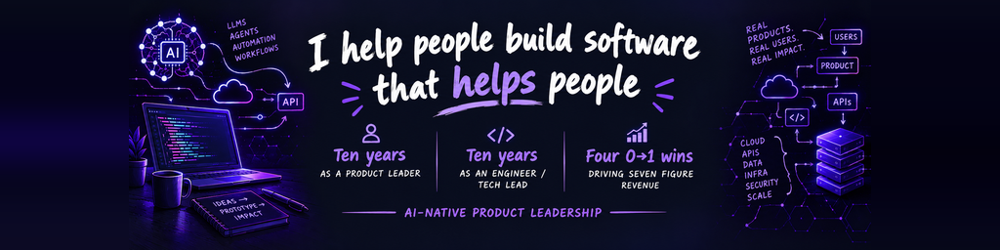

Cameron HayGlass
AI-Native Product Leadership
I love helping people build software that helps people. I lead product the way I learned to build it: by prioritizing people, and making things. Prototypes over documents, real users over assumptions, and AI agents to move faster on the questions that matter.
- Ten years in Product: four 0 to 1 winsI've shipped four new products from a whiteboard sketch to seven figure ARR, including growing Kong Insomnia from $1M to $9M ARR in 18 months, and Customer.io's first paid feature to $3M in a year.
- Ten years as an engineer and tech leadI still write code, work in SQL, and prototype new bets. Once a nerd, always a nerd.
- People over everythingIn this AI world, we can move faster then ever. But the secret is always the people... understanding the customer's pain, what the engineer can build, and helping the company focus on what matters most. People tell me I make work fun and important at the same time - that matters a lot to me.
- Me, Myself and II live in Winnipeg, Manitoba, Canada with my wife and cat. I love weird beer, travel, CFL football, and nerd-sniping myself.
- CFL Fans Fight Cancer Co-FounderI co-founded CFL Fans Fight Cancer in 2006. We've raised over $400,000 for local cancer charities since, including $80,000 when I was the national lead in 2025.